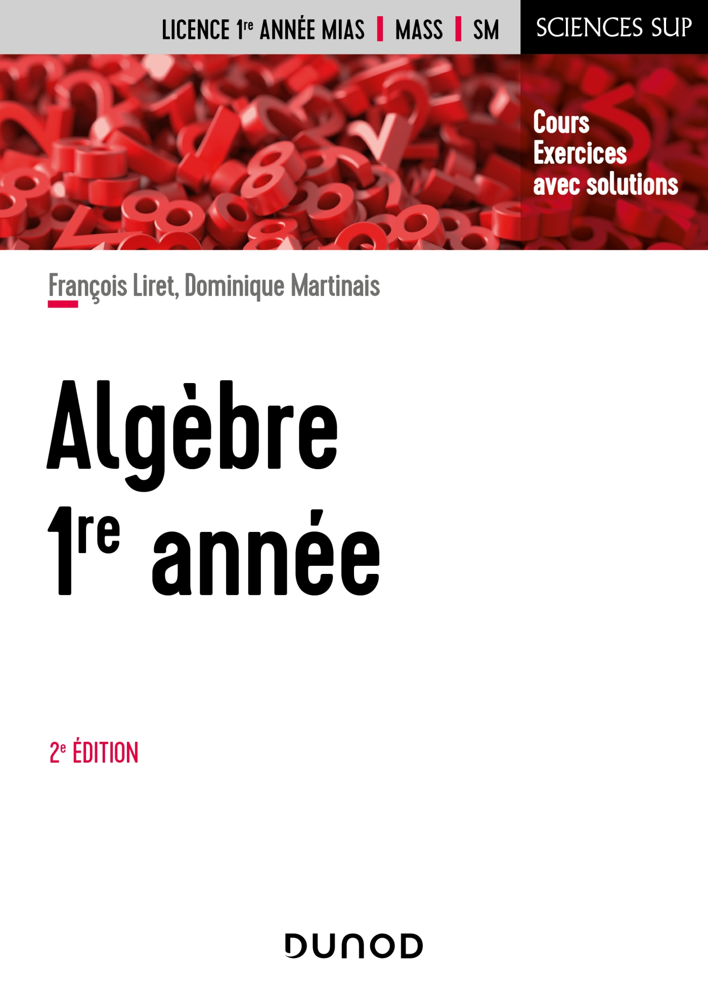

Sommaire
Objectifs généraux
L'objectif principal de l'algèbre est de comprendre les structures mathématiques, telles que les ensembles, les nombres, les opérations, les équations, les polynômes et les fonctions. Il vise à développer la capacité à manipuler ces concepts pour résoudre des équations, étudier des modèles mathématiques, et aborder des problèmes mathématiques variés.
Plan du cours
Matrice
Déterminant d'une matrice
Espace vectoriel

Cours Algèbre